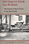

Browse
other Author lists:
A B C
D E F
G H I
J K L
M N O
P Q R
S T U
V W X
Y Z |

|
Economies of Desire
Sex and Tourism in Cuba and the Dominican Republic
Cabezas, Amalia L.
232 pp • 5.5x8.25 • Spring 2009
paper 978-1-59213-750-3
cloth 978-1-59213-749-7
|

|
Sustainable Failures
Environmental Policy and Democracy in a Petro-dependent World
Cable, Sherry
242 pp • 6x9 • Fall 2012
paper 978-1-43990-900-3
cloth 978-1-43990-899-0
|
|
From Warism to Pacifism
A Moral Continuum
Second Edition
Cady, Duane L.
170 pp • 5.5x8.25 • Fall 2010
paper 978-1-4399-0312-4
cloth 978-1-4399-0311-7
|

|
Affirmative
Action and the University
A Philosophical Inquiry
edited
by Cahn, Steven M.
320 pp • 6x9 • Spring 1993
paper 978-1-56639-399-7
cloth 978-1-56639-030-9 |

|
Moral Problems in Higher Education
edited by Cahn, Steven M.
264 pp • 6x9 • Spring 2011
paper 978-1-4399-0659-0
cloth 978-1-4399-0658-3
|

|
Morality,
Responsibility, and the University
Studies in Academic Ethics
edited
by Cahn, Steven M.
288 pp • Fall 1990
paper 978-0-87722-959-9
cloth 978-0-87722-646-8 |

|
God Talk
Experimenting with the Religious Causes of Public Opinion
Djupe, Paul A. and Brian R. Calfano
276 pp • 6x9 • Fall 2013
paper 978-1-4399-0866-2
cloth 978-1-4399-0865-5 |

|
Race Appeal
How Candidates Invoke Race in U.S. Political Campaigns
McIlwain, Charlton D. and Stephen M. Caliendo
272 pp • 6x9 • Spring 2011
paper 978-1-4399-0276-9
cloth 978-1-4399-0275-2
|

|
Bernard
Berenson and the Twentieth Century
Calo,
Mary Ann
288 pp • 5.5x8.25 • Fall 1993
paper 978-1-56639-117-7
cloth 978-1-56639-116-0
|

|
Nothing,
Nobody
The Voices of the Mexico City Earthquake
Poniatowska,
Elena, translated by Aurora Camacho de Schmidt, foreword by
Arthur Schmidt
384 pp • 6x9 • Fall 1995
paper 978-1-56639-345-4
cloth 978-1-56639-344-7
|

|
Native
Sons
Philadelphia Baseball Players Who Made the Major Leagues
Westcott,
Rich, foreword by Bill Campbell
184 pp • 5.5x8.25 • Fall 2003
paper 978-1-59213-215-7
|
|
Maya
In Exile
Guatemalans in Florida
Burns,
Allan F., introduction by Jerónimo Camposeco
256 pp • 5.5x8.25 • Spring 1993
paper 978-1-56639-036-1
cloth 978-1-56639-035-4 |

|
Working
Poor
Farmworkers in the United States
Griffith,
David and Ed Kissam with Jeromino Camposeco, Anna García, Max
Pfeffer, David Runsten, and Manuel Valdes Pizzini
368 pp • 6x9 • Fall 1994
paper 978-1-56639-239-6
cloth 978-1-56639-238-9 |

|
SLAPPs
Getting Sued for Speaking Out
Pring,
George W. and Penelope Canan
296 pp • 6x9 • Fall 1995
paper 978-1-56639-369-0
cloth 978-1-56639-368-3
|

|
The
American Perception of Class
Vanneman,
Reeve and Lynn Weber Cannon
384 pp • 6x9 • Spring 1987
paper 978-0-87722-593-5
cloth 978-0-87722-436-5 |
|
On the Margins of Citizenship
Intellectual Disability and Civil Rights in Twentieth-Century America
Carey, Allison
286 pp • 6x9 • Fall 2009
paper 978-1-59213-698-8
cloth 978-1-59213-697-1
|

|
James Naismith
The Man Who Invented Basketball
Rains, Rob with Hellen Carpenter
216 pp • 5.5x8.25 • Fall 2009
paper 978-1-4399-0134-2
cloth 978-1-4399-0133-5
|

|
Images
of Appalachian Coalfields
Levy,
Builder, introduction by Helen Matthews Lewis, foreword by Cornell
Capa
144 pp • 8x10 • Spring 1989
cloth 978-0-87722-588-1 |
|
Race
Relations in Wartime Detroit
The Sojourner Truth Housing Controversy, 1937-1942
Capeci,
Jr., Dominic J.
Spring 1984
cloth 978-0-87722-339-9 |

|
The
Unnatural Lottery
Character and Moral Luck
Card,
Claudia
232 pp • 5.5x8.25 • Fall 1996
paper 978-1-56639-453-6
cloth 978-1-56639-452-9
|

|
A Guide to the Great Gardens of the Philadelphia Region
Text by Levine, Adam
Photographs by Cardillo, Rob
192 pp • 5.375x9.125 • Spring 2007
paper 978-1-59213-510-3
|
|
On the Margins of Citizenship
Intellectual Disability and Civil Rights in Twentieth-Century America
Carey, Allison
272 pp • 6x9 • Fall 2009
paper 978-1-59213-698-8
cloth 978-1-59213-697-1
|

|
I
Remember Julia
Voices of the Disappeared
Carlson,
Eric Stener
240 pp • 5.5x8.25 • Spring 1996
paper 978-1-56639-437-6
cloth 978-1-56639-430-7
|

|
Troubling Gender
Youth and Cumbia in Argentina's Music Scene
Vila, Pablo and Pablo Semán, contributions by Eloísa Martín and María Julia Carozzi
230 pp • 6x9 • Fall 2011
paper 978-1-4399-0267-7
cloth 978-1-4399-0266-0
|

|
Readings
in American Indian Law
Recalling the Rhythm of Survival
edited
by Carrillo, Jo
353 pp • 7x10 • Fall 1997
paper 978-1-56639-582-3
cloth 978-1-56639-581-6
|

|
The
Elements of Metaphysics
Carter,
William R.
208 pp • Fall 1989
cloth 978-0-87722-619-2 |

|
The
Braves Encyclopedia
Caruso,
Gary
544 pp • 9x12 • Fall 1995
cloth 978-1-56639-384-3 |

|
Down
the Backstretch
Racing and the American Dream
Case,
Carole
224 pp • Fall 1991
cloth 978-0-87722-846-2
|

|
Life
and Death in Intensive Care
Cassell,
Joan
248 pp • 6x9 • Spring 2005
paper 978-1-59213-336-9
cloth 978-1-59213-335-2
|
|
Children
in the Field
Anthropological Experiences
edited
by Cassell, Joan
288 pp • Fall 1987
paper 978-1-56639-206-8
cloth 978-0-87722-477-8 |

|
The
Unity of Mistakes
A Phenomenological Interpretation of Medical Work
Paget,
Marianne A., foreword by Joan Cassell
206 pp • 5.5x8.25 • Spring 2004
paper 978-1-59213-186-0
|

|
Expected
Miracles
Surgeons at Work
Cassell,
Joan
259 pp • Spring 1991
paper 978-0-87722-838-7
cloth 978-0-87722-804-2 |

|
Human
Rights in a Changing World
Cassese,
Antonio
200 pp • Fall 1990
cloth 978-0-87722-746-5 |

|
Muchachas
No More
Household Workers in Latin America and the Caribbean
edited
by Chaney, Elsa M. and Mary Garcia Castro
520 pp • Fall 1988
paper 978-0-87722-835-6
cloth 978-0-87722-571-3 |

|
Wash
and Be Healed
The Water-Cure Movement and Women's Health
Cayleff,
Susan E.
257 pp • Spring 1987
paper 978-0-87722-859-2
cloth 978-0-87722-462-4
|
|
Caribbean Migration to Western Europe and the United States
Essays on Incorporation, Identity, and Citizenship
edited by Cervantes-Rodriguez, Margarita, Ramon Grosfoguel and Eric Mielants
270 pp • 6x9 • Fall 2008
cloth 978-1-59213-954-5
|

|
Hapa Girl
A Memoir
Chai, May-lee
232 pp • 5.5x8.25 • Spring 2007
paper 978-1-59213-616-2
cloth 978-1-59213-615-5
|

|
Legalizing
Gay Marriage
Mello,
Michael, foreword by David Chambers
352 pp • 6x9 • Fall 2004
paper 978-1-59213-079-5
cloth 978-1-59213-078-8
|
|
Special
Education Policies
Their History, Implementation, and Finance
Chambers,
Jay G. and William T. Hartman
301 pp • Fall 1982
cloth 978-0-87722-280-4 |

|
Mayors
and Schools
Minority Voices and Democratic Tensions in Urban Education
Chambers,
Stefanie 240 pp • 5.5x8.25 •
Spring 2006
paper 978-1-59213-469-4
cloth 978-1-59213-468-7
|

|
The Politics of New Immigrant Destinations
Transatlantic Perspectives
edited by Chambers, Stefanie, Diana Evans, Anthony M. Messina, and Abigail Fisher Williamson
348 pp • 6x9 • Spring 2017
paper 978-1-4399-1463-2
cloth 978-1-4399-1462-5
|

|
Somalis in the Twin Cities and Columbus
Immigrant Incorporation in New Destinations
Chambers, Stefanie
250 pp • 5.5x8.25 • Spring 2017
paper 978-1-4399-1442-7
cloth 978-1-4399-1441-0
|

|
Chinese Americans and the Politics of Race and Culture
edited
by Chan, Sucheng and Madeline Y. Hsu 288 pp • 6x9 • Spring 2008
paper 978-1-59213-753-4
cloth 978-1-59213-752-7
|
|
Entry
Denied
Exclusion and the Chinese Community in America, 1882-1943
Chan,
Sucheng
320 pp • Spring 1991
paper 978-1-56639-201-3
cloth 978-0-87722-798-4 |

|
Claiming
America
Constructing Chinese American Identities during the Exclusion
Era
edited
by Wong, K. Scott and Sucheng Chan
226 pp • 6x9 • Fall 1997
paper 978-1-56639-576-2
cloth 978-1-56639-575-5
|

|
Hmong
Means Free
Life in Laos and America
edited
by Chan, Sucheng
296 pp • 6x9 • Spring 1994
paper 978-1-56639-163-4
cloth 978-1-56639-162-7
|

|
Chinese
American Transnationalism
The Flow of People, Resources, and Ideas between China and America
during the Exclusion Era
edited
by Chan, Sucheng 312 pp • 6x9 •
Fall 2005
paper 978-1-59213-435-9
cloth 978-1-59213-434-2
|

|
The
Vietnamese American 1.5 Generation
Stories of War, Revolution, Flight, and New Beginnings
edited
by Chan, Sucheng 344 pp • 6x9 •
Spring 2006
paper 978-1-59213-501-1
cloth 978-1-59213-500-4
|

|
Searching
for Safe Spaces
Afro-Caribbean Women Writers in Exile
Chancy,
Myriam J. A.
272 pp • 6x9 • Fall 1997
paper 978-1-56639-540-3
cloth 978-1-56639-539-7
|
|
Muchachas
No More
Household Workers in Latin America and the Caribbean
edited
by Chaney, Elsa M. and Mary Garcia Castro
520 pp • Fall 1988
paper 978-0-87722-835-6
cloth 978-0-87722-571-3 |
|
Reggae
Routes
The Story of Jamaican Music
Chang,
Kevin O'Brien and Wayne Chen
256 pp • 6.75x9.25 • Spring 1998
paper 978-1-56639-629-5
|

|
Drug Smugglers on Drug Smuggling
Lessons from the Inside
Decker, Scott H. and Margaret Townsend Chapman
224 pp • 6x9 • Fall 2007
paper 978-1-59213-643-8
cloth 978-1-59213-642-1
|

|
The
Beat of My Drum
An Autobiography
Olatunji,
Babatunde with Robert Atkinson and Akinsola Akiwowo, foreword
by Joan Baez, introduction by Eric Charry
272 pp • 6x9 • Spring 2005
paper 978-1-59213-354-3
cloth 978-1-59213-353-6
|
 |
Rulers and Capital in Historical Perspective
State Formation and Financial Development in India and the United States
Chatterjee, Abhishek
188 pp • 5.5x8.25 • Fall 2017
cloth 978-1-4399-1500-4
|
|
Reggae
Routes
The Story of Jamaican Music
Chang,
Kevin O'Brien and Wayne Chen
256 pp • 6.75x9.25 • Spring 1998
paper 978-1-56639-629-5
|

|
The
New Asian Immigration in Los Angeles and Global Restructuring
edited
by Ong, Paul, Edna Bonacich and Lucie Cheng
344 pp • 6x9 • Fall 1994
paper 978-1-56639-218-1
cloth 978-1-56639-217-4 |

|
Global
Production
The Apparel Industry in the Pacific Rim
edited
by Bonacich, Edna, Lucie Cheng, Norma Chinchilla, Nora Hamilton
and Paul Ong
400 pp • 6x9 • Spring 1994
paper 978-1-56639-169-6
cloth 978-1-56639-168-9
|

|
Recovered
Legacies
Authority and Identity in Early Asian American Literature
edited
by Lawrence, Keith and Floyd Cheung
320 pp • 6x9 • Spring 2005
paper 978-1-59213-119-8
cloth 978-1-59213-118-1
|

|
More
Speech
Dialogue Rights and Modern Liberty
Chevigny,
Paul
228 pp • Fall 1987
cloth 978-0-87722-514-0 |

|
Two
Paths Toward Peace
Child,
James W. and Donald Scherer
271 pp • Fall 1991
cloth 978-0-87722-882-0 |

|
Transcommunality
From the Politics of Conversion to the Ethics of Respect
Childs,
John Brown
256 pp • 5.5x8.25 • Fall 2002
paper 978-1-59213-005-4
cloth 978-1-59213-004-7
|

|
Leadership,
Conflict, and Cooperation in Afro-American Social Thought
Childs,
John Brown
224 pp • Fall 1988
paper 978-1-56639-085-9
cloth 978-0-87722-581-2 |

|
paper
Son
One Man's Story
Chin,
Tung Pok with Winifred C. Chin, introduction by K. Scott Wong
184 pp • 5.5x8.25 • Fall 2000
paper 978-1-56639-801-5
cloth 978-1-56639-800-8
|

|
Smuggled
Chinese
Clandestine Immigration to the United States
Chin,
Ko-lin, foreword by Douglas S. Massey
296 pp • 6x9 • Fall 1999
paper 978-1-56639-733-9
cloth 978-1-56639-732-2
|

|
Doing
What Had to Be Done
The Life Narrative of Dora Yum Kim
Chin,
Soo-Young
272 pp • 6x9 • Spring 1999
paper 978-1-56639-694-3
cloth 978-1-56639-693-6
|

|
Tutoring Matters
Everything You Always Wanted to Know about How to Tutor
Second Edition
Chin, Tiffani, Jerome Rabow and Jeimee Estrada
240 pp • 5.5x8.25 • Fall 2011
paper 978-1-4399-0741-2
cloth 978-1-4399-0740-5
|
|
Paper
Son
One Man's Story
Chin,
Tung Pok with Winifred C. Chin, introduction by K. Scott Wong
184 pp • 5.5x8.25 • Fall 2000
paper 978-1-56639-801-5
cloth 978-1-56639-800-8
|
|
Global
Production
The Apparel Industry in the Pacific Rim
edited
by Bonacich, Edna, Lucie Cheng, Norma Chinchilla, Nora Hamilton
and Paul Ong
400 pp • 6x9 • Spring 1994
paper 978-1-56639-169-6
cloth 978-1-56639-168-9
|
|
Seeking
Community in a Global City
Guatemalans and Salvadorans in Los Angeles
Hamilton,
Nora and Norma Stoltz Chinchilla
304 pp • 6x9 • Spring 2001
paper 978-1-56639-868-8
cloth 978-1-56639-867-1
|

|
Elie
Wiesel and the Politics of Moral Leadership
Chmiel,
Mark
248 pp • 6x9 • Spring 2001
cloth 978-1-56639-857-2
|

|
Mobilizing Gay Singapore
Rights and Resistance in an Authoritarian State
Chua, Lynette J.
228 pp • 6x9 • Spring 2014
paper 978-1-4399-1032-0
cloth 978-1-43991-031-3 |

|
Hollywood
Asian
Philip Ahn and the Politics of Cross-Ethnic Performance
Chung, Hye Seung
248 pp • 6x9 • Fall 2006
paper 978-1-59213-516-5
cloth 978-1-59213-515-8
|

|
The Enigmatic Academy
Class, Bureaucracy, and Religion in American Education
Churchill, Christian J., and Gerald E. Levy
234 pp • 6x9 • Spring 2012
paper 978-1-4399-0784-9
cloth 978-1-4399-0783-2 |

|
The
World of Kate Roberts
Selected Stories, 1925-1981
translated
by Clancy, Joseph P.
400 pp • Fall 1991
paper 978-0-87722-795-3
cloth 978-0-87722-794-6 |

|
The Asian American Avant-Garde
Universalist Aspirations in Modernist Literature and Art
Clark, Audrey Wu
246 pp • 6x9 • Fall 2015
paper 978-1-4399-1227-0
cloth 978-1-4399-1226-3 |

|
The
Irish in Philadelphia
Ten Generations of Urban Experience
Clark,
Dennis
264 pp • Spring 1982
paper 978-0-87722-227-9
cloth 978-0-87722-057-2
|

|
Hope
and Dignity
Older Black Women of the South
narrator
Wilson, Emily Herring, photographs by Susan Mullally Clark,
preface by Maya Angelou
224 pp • 7x9 • Spring 1983
paper 978-1-56639-017-0
cloth 978-0-87722-302-3 |

|
Multiethnic
Moments
The Politics of Urban Education Reform
Clarke, Susan E., Rodney E. Hero, Mara S. Sidney, Luis Fraga
and Bari Anhalt Erlichson, foreword by Clarence N. Stone
264 pp • 6x9 • Fall 2006
paper 978-1-59213-537-0
cloth 978-1-59213-536-3
|
 |
Reimagining Courts
A Design for the Twenty-First Century
Flango, Victor E. and Thomas M. Clarke
New in Paperback!
230 pp • 5.5x8.25 • Spring 2017
paper 978-1-4399-1168-6
cloth 978-1-43991-167-9 |

|
Reinventing
Cities
Equity Planners Tell Their Stories
Krumholz,
Norman and Pierre Clavel
272 pp • 6x9 • Fall 1994
paper 978-1-56639-210-5
cloth 978-1-56639-209-9 |

|
Opposition
Planning in Wales and Appalachia
Clavel,
Pierre
251 pp • Fall 1982
cloth 978-0-87722-276-7 |

|
Dollars
and Votes
How Business Campaign Contributions Subvert Democracy
Clawson,
Dan, Alan Neustadtl and Mark Weller
256 pp • 6x9 • Spring 1998
paper 978-1-56639-626-4
cloth 978-1-56639-625-7
|

|
Legacy and Legitimacy
Black Americans and the Supreme Court
Clawson, Rosalee A. and Eric N. Waltenburg
232 pp • 5.5x8.25 • Fall 2008
paper 978-1-59213-903-3
cloth 978-1-59213-902-6
|

|
Connection
on the Ice
Environmental Ethics in Theory and Practice
Clayton,
Patti H., photographs by Charles Mason
352 pp • 6x9 • Spring 1998
paper 978-1-56639-616-5
cloth 978-1-56639-615-8
|

|
Moving
Up and Out
Poverty, Education, and the Single Parent Family
Holyfield,
Lori, foreword by Hillary Rodham Clinton
184 pp • 5.5x8.25 • Fall 2001
paper 978-1-56639-915-9
cloth 978-1-56639-914-2
|

|
Policing
Pop
edited
by Cloonan, Martin and Reebee Garofalo
256 pp • 7x10 • Fall 2002
paper 978-1-56639-990-6
cloth 978-1-56639-989-0
|

|
Over
There
The Story of America's First Great Overseas Crusade
Friedel,
Frank, foreword by Edward M. Coffman
270 pp • Spring 1990
cloth 978-0-87722-718-2 |

|
Dirty
Details
The Days and Nights of a Well Spouse
Cohen,
Marion Deutsche, foreword by Marty Wyngaarden Krauss
224 pp • 5.5x8.25 • Spring 1996
paper 978-1-56639-426-0
cloth 978-1-56639-425-3
|
|
AIDS
Crisis in Professional Ethics
edited
by Cohen, Elliot D. and Michael Davis
288 pp • 6x9 • Spring 1994
paper 978-1-56639-165-8
cloth 978-1-56639-164-1 |
|
Process
of Occupational Sex-Typing
The Feminization of Clerical Labor in Great Britain, 1870-1936
Cohn,
Samuel
288 pp • Fall 1985
cloth 978-0-87722-402-0 |
 |
Ball Don't Lie!
Myth, Genealogy, and Invention in the Cultures of Basketball
Colás, Yago
228 pp • 6x9 • Spring 2016
paper 978-1-4399-1243-0
cloth 978-1-4399-1242-3
|

|
Human
Attachment
Colin,
Virginia L.
416 pp • 6.5x9.25 • Spring 1996
cloth 978-1-56639-459-8 |

|
The Transnational Politics of Asian Americans
edited by Collet, Christian, Pei-te Lien
Foreword by Don Nakanishi
252 pp • 6x9 • Spring 2009
paper 978-1-59213-861-6
cloth 978-1-59213-860-9
|
|
Jesus, Jobs, and Justice
African American Women and Religion
Collier-Thomas, Bettye
736 pp • 6.25x9.125 • Fall 2013
paper 978-1-4399-1105-1
|
|
West
African Pop Roots
Collins,
John
382 pp • 6x9 • Spring 1992
paper 978-0-87722-916-2
cloth 978-0-87722-793-9 |

|
Black
Corporate Executives
The Making and Breaking of a Black Middle Class
Collins,
Sharon M.
216 pp • 5.5x8.25 • Fall 1996
paper 978-1-56639-474-1
cloth 978-1-56639-473-4
|

|
From
Black Power to Hip Hop
Racism, Nationalism, and Feminism
Collins,
Patricia Hill 256 pp • 6x9 • Fall
2005
paper 978-1-59213-092-4
cloth 978-1-59213-091-7
|

|
On Intellectual Activism
Collins, Patricia Hill
278 pp • 6x9 • Fall 2012
paper 978-1-4399-0961-4
cloth 978-1-4399-0960-7
|

|
Choosing
Equality
The Case for Democratic Schooling
Bastian,
Ann, Norm Fruchter, Marilyn Gittell, Kenneth Haskins and Colin
Greer, foreword by James P. Comer
222 pp • 5.5x8.25 • Fall 1986
paper 978-0-87722-454-9
cloth 978-0-87722-438-9 |

|
Schools
and Social Justice
Connell,
R. W.
144 pp • 5x8.25 • Fall 1993
paper 978-1-56639-138-2
cloth 978-1-56639-137-5
|

|
Rethinking
Sex
Social Theory and Sexuality Research
edited
by Connell, R. W. and G. W. Dowsett
192 pp • 5.5x8.25 • Spring 1993
paper 978-1-56639-073-6
cloth 978-1-56639-072-9
|
|
Deviance
and Medicalization
From Badness to Sickness
Conrad,
Peter and Joseph W. Schneider
352 pp • 7x10 • Fall 1992
paper 978-0-87722-999-5
cloth 978-0-87722-998-8 |

|
Having
Epilepsy
The Experience and Control of Illness
Schneider,
Joseph W. and Peter Conrad
240 pp • Fall 1983
paper 978-0-87722-398-6
cloth 978-0-87722-318-4 |
|
Health
and Health Care In Developing Countries
Sociological Perspectives
edited
by Conrad, Peter and Eugene B. Gallagher
336 pp • 6x9 • Spring 1993
cloth 978-1-56639-027-9 |
 |
Bernie Sanders and the Boundaries of Reform
Socialism in Burlington
Conroy, W. J.
With a new Preface by the Author
278 pp • 6x9 • Spring 2017
paper 978-1-4399-1480-9 |

|
Challenging
the Boundaries of Reform
Socialism in Burlington
Conroy,
W. J.
288 pp • Spring 1990
cloth 978-0-87722-702-1 |

|
Mexican Voices of the Border Region
Velasco Ortiz, Laura and Oscar F. Contreras, with translations by Sandra del Castillo
238 pp • 6x9 • Spring 2011
paper 978-1-59213-909-5
cloth 978-1-59213-908-8
|

|
Acres
of Diamonds
Conwell,
Russell H., foreword by Russell F. Weigley, introduction by
David Adamany
96 pp • 5x7 • Spring 2002
cloth 978-1-56639-962-3
|

|
Women
and Film
A Sight and Sound Reader
edited
by Cook, Pam and Philip Dodd
287 pp • 5.5x8.25 • Fall 1993
paper 978-1-56639-143-6
cloth 978-1-56639-142-9
|
|
Women
and Trade Unions in Eleven Industrialized Countries
edited
by Cook, Alice H., Val R. Lorwin and Arlene Kaplan Daniels
360 pp • Fall 1983
cloth 978-0-87722-319-1 |
|
Seeing
New York
History Walks for Armchair and Footloose Travelers
Cooke,
Hope
464 pp • 6x9 • Spring 1995
paper 978-1-56639-289-1
cloth 978-1-56639-288-4 |

|
Universities
in the Age of Corporate Science
The UC Berkeley-Novartis Controversy
Coppin, Dawn, Alan P. Rudy, Jason Konefal, Bradley T. Shaw,
Toby A. Ten Eyck, Craig Harris and Lawrence Busch
256 pp • 6x9 • Fall 2006
cloth 978-1-59213-533-2
|

|
Migration,
Transnationalization, and Race in a Changing New York
edited
by Cordero-Guzmán, Héctor R., Robert C. Smith and Ramón Grosfoguel
320 pp • 7x10 • Fall 2001
paper 978-1-56639-888-6
cloth 978-1-56639-887-9
|

|
Cowboys
as Cold Warriors
The Western and U.S. History
Corkin,
Stanley
288 pp • 6x9 • Spring 2004
paper 978-1-59213-254-6
cloth 978-1-59213-253-9
|

|
Judging
Children as Children
A Proposal for a Juvenile
Justice System
Corriero, Michael A.
232 pp • 5.5x8.25 • Spring 2008
paper 978-1-59213-169-3
cloth 978-1-59213-168-6
|

|
Bridging
the Americas
The Literature of Paule Marshall, Toni Morrison, and Gayl Jones
Coser,
Stelamaris
240 pp • 5.5x8.25 • Fall 1994
paper 978-1-56639-267-9
cloth 978-1-56639-266-2 |

|
Building
the Beloved Community
Maurice McCrackin's Life for Peace and Civil Rights
Bechtel,
Judith A. and Robert M. Coughlin, foreword by Daniel Berrigan
288 pp • Spring 1991
cloth 978-0-87722-783-0 |

|
Ain't
Gonna Let Nobody Turn Me Round
The Pursuit of Racial Justice in the Rural South
Couto,
Richard A.
440 pp • 6x9 • Spring 1991
paper 978-1-56639-004-0
cloth 978-0-87722-806-6 |
 |
A Nice Place to Visit
Tourism and Urban Revitalization in the Postwar Rustbelt
Cowan, Aaron
236 pp • 6x9 • Spring 2016
paper 978-1-4399-1346-8
cloth 978-1-4399-1345-1
|

|
The
Boss
J. Edgar Hoover and the Great American Inquisition
Theoharis,
Athan G. and John Stuart Cox
504 pp • Spring 1988
cloth 978-0-87722-532-4 |

|
A
Revolution of the Heart
Essays on the Catholic Worker
edited
by Coy, Patrick G., foreword by Jim Douglass
408 pp • Spring 1988
cloth 978-0-87722-531-7 |

|
Religion
and Radical Politics
An Alternative Christian Tradition in the United States
Craig,
Robert H.
320 pp • 6x9 • Fall 1992
paper 978-1-56639-335-5
cloth 978-0-87722-973-5
|

|
Pushing for Midwives
Homebirth Mothers and the Reproductive Rights Movement
Craven, Christa
224 pp • 6x9 • Fall 2010
paper 978-1-4399-0220-2
cloth 978-1-4399-0219-6
|

|
Women
and Gender
A Feminist Psychology
Unger,
Rhoda and Mary Crawford
549 pp • Fall 1991
cloth 978-0-87722-897-4 |

|
Images
of Animals
Anthropomorphism and Animal Mind
Crist,
Eileen
256 pp • 6x9 • Fall 1998
paper 978-1-56639-788-9
cloth 978-1-56639-656-1
|

|
Work,
Community, and Power
The Experience of Labor in Europe
edited
by Cronin, James E. and Carmen Sirianni
306 pp • Spring 1983
paper 978-0-87722-309-2
cloth 978-0-87722-308-5 |

|
Worktime
and Industrialization
An International History
edited
by Cross, Gary
256 pp • Fall 1988
cloth 978-0-87722-582-9 |

|
Shades
of Black
Diversity in African American Identity
Cross,
Jr., William E.
296 pp • Spring 1991
paper 978-0-87722-949-0
cloth 978-0-87722-759-5 |

|
Politics
and the Class Divide
Working People and the Middle Class Left
Croteau,
David
320 pp • 6x9 • Fall 1994
paper 978-1-56639-255-6
cloth 978-1-56639-254-9
|

|
Identity
and Power
Puerto Rican Politics and the Challenge of Ethnicity
Cruz,
José E.
296 pp • 6x9 • Spring 1998
paper 978-1-56639-605-9
cloth 978-1-56639-604-2
|
 |
Shaming the Constitution
The Detrimental Results of Sexual Violent Predator Legislation
Perlin, Michael L., and Heather Ellis Cucolo
324 pp • 6x9 • Spring 2017
paper 978-1-4399-1292-8
cloth 978-1-4399-1291-1
|

|
The
Atlas of Pennsylvania
edited
by Cuff, David J., William J. Young, Edward K. Muller, Wilbur
Zelinsky and Ronald F. Abler
304 pp • 13.25x15.5 • Fall 1989
cloth 978-0-87722-618-5 |

|
Communities and Crime
An Enduring American Challenge
Wilcox, Pamela, Francis T. Cullen, and Ben Feldmeyer
282 pp • 6x9 • Fall 2017
paper 978-1-59213-974-3
cloth 978-1-59213-973-6
|

|
Freedom
at Risk
Secrecy, Censorship, and Repression in the 1980s
edited
by Curry, Richard O.
448 pp • Fall 1988
paper 978-0-87722-660-4
cloth 978-0-87722-543-0 |
|
The Man-Not
Race, Class, Genre, and the Dilemmas of Black Manhood
Curry, Tommy J.
294 pp • 6x9 • Spring 2017
paper 978-1-4399-1486-1
cloth 978-1-4399-1485-4
|

|
Mind's
Eye, Mind's Truth
FSA Photography Reconsidered
Curtis,
James
160 pp • 9x10 • Fall 1989
paper 978-0-87722-823-3
cloth 978-0-87722-627-7 |

|
Diet
and Domestic Life in Society
edited
by Sharman, Anne, Janet Theophano, Karen Curtis and Ellen Messer
288 pp • Fall 1990
cloth 978-0-87722-751-9 |
|
Labor's
Time
Shorter Hours, the UAW, and the Struggle for American Unionism
Cutler,
Jonathan
256 pp • 5.5x8.25 • Spring 2004
paper 978-1-59213-247-8
cloth 978-1-59213-246-1
|